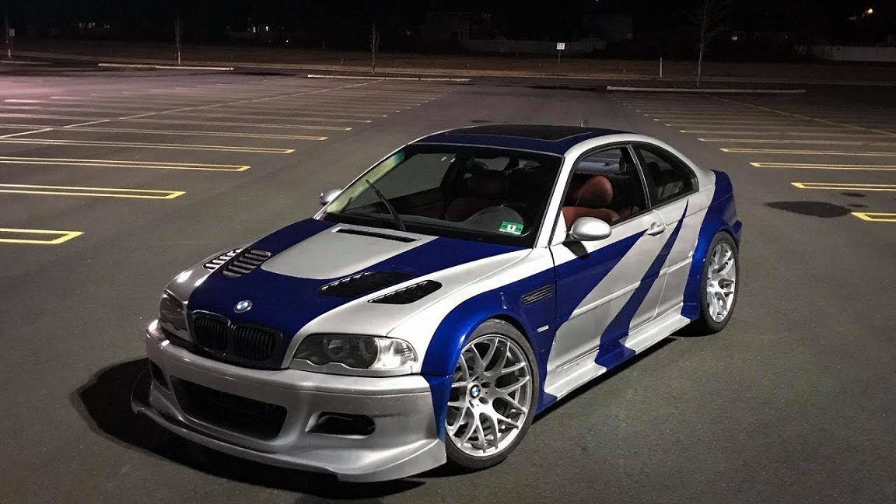

BMW M3 OPIS AUTA KTÓRE ZAWSZE BĘDZIE W NASZEJ PAMIĘCI
BMW M3 – sportowa wersja samochodów BMW oparta na serii 3. Pierwsze BMW M3 pojawiło się w 1985 roku. Obecnie istnieją już 4 generacje tych pojazdów. Moc waha się od 195 KM w najstarszym modelu E30 do 450 KM w modelu M3 GTS (E92). Produkcja została zakończona we wrześniu 2013 roku. BMW ogłosiło, że nazwa M3 w kolejnej generacji odnosić będzie się tylko do wersji sedan, wersja coupé otrzymała nazwę M4
